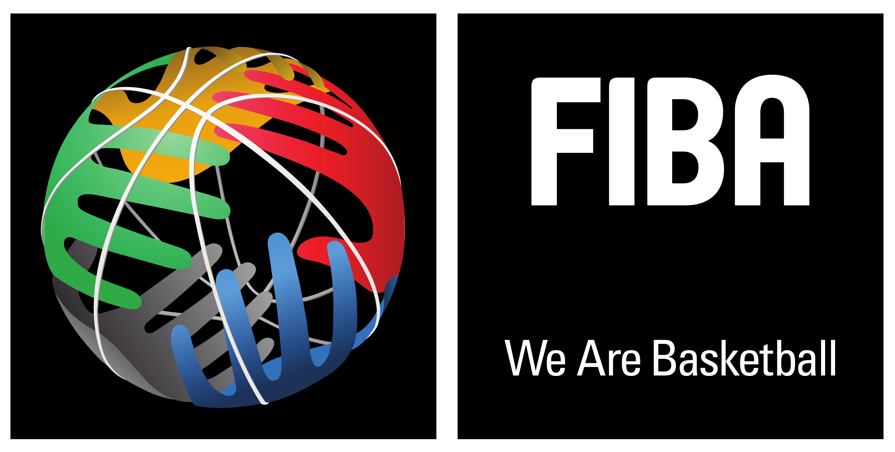

Grandes Agencias
La National Basketball Association, más conocida simplemente por sus siglas NBA, es una liga privada de baloncesto profesional que se disputa en Estados Unidos desde 1949, cuando se fusionan las ligas profesionales National Basketball League (NBL, creada en 1937) y la Basketball Association of America (BAA, fundada en 1946). Al ser una entidad privada, no depende oficialmente de la Federación Estadounidense de Baloncesto.

La Federación Internacional de Baloncesto es el organismo que se dedica a regular las normas del baloncesto mundialmente, así como de celebrar periódicamente competiciones y eventos en sus dos disciplinas.
Fue fundada en 1932 y tiene su sede actual en Mies (Suiza). Cuenta en 2018 con la afiliación de 213 federaciones nacionales,1 divididas a su vez en 5 federaciones continentales, que son: África, América, Asia, Europa y Oceanía. El malí Hamame Niang es el presidente de la FIBA desde 2019.
